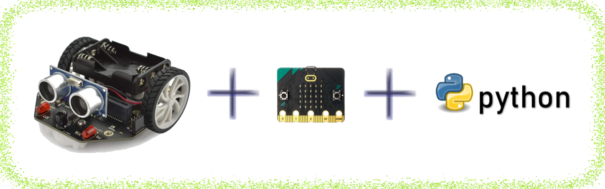

Es un componente físico programable, que permite controlar el funcionamiento de una máquina.
Ejemplo:
La placa Arduino es un ejemplo.
Sensores
Definición:
Plural de sensor. Es un dispositivo que tiene la capacidad de detectar movimientos, ruidos, presión, luces...
Ejemplo:
Cuando entramos en un baño el detector de presencia, que es un sensor de distancia, permite que se encienda la luz.
Sé que estáis deseando comenzar a programar.
Pero antes, os propongo que repasemos los siguientes contenidos:
Aprender más sobre la placa micro:bit.
Conocer el editor de código que vamos a utilizar para programar.
Aspectos básicos relacionados con el lenguaje de programación Python.
¡Ánimo, ya falta menos!
1. Nuestra placa Micro:Bit
Para realizar nuestro proyecto vamos a utilizar la placa controladoramicro:bit.
Estoy seguro de que ya sabes utilizar este componente. Si vuestro grupo tiene alguna duda o quiere aprender algo más sobre la placa, os invito a ver los siguientes vídeos:
Aspectos básicos
Este vídeo os muestra aspectos básicos relacionados con:
La placa micro:bit.
¿Qué vamos a necesitar?
Los programas.
Recuerda que si lo necesitas puedes activar subtítulos. En la rueda dentada/Subtítulos, puedes elegir el idioma que más te interese.
También podéis visitar la página web y ver la información en formato texto.
Aquí podéis acceder al contenido de la página Guía del usuario.
Conecta tu placa
Un paso importante que hay que conocer es cómo podemos enviar nuestros programas a la placa micro:bit.
El siguiente vídeo os enseña cómo hacerlo.
Recuerda que si lo necesitas puedes activar subtítulos. En la rueda dentada/Subtítulos, puedes elegir el idioma que más te interese.
También podéis visitar la página web y ver la información en formato texto.
Aquí podéis acceder al contenido de la página Conectar y transferir.
LEDs
Una parte importante de nuestra placa son los LEDs (Diodos que Emiten Luz). En el siguiente vídeo encontraréis toda la información.
Recuerda que si lo necesitas puedes activar subtítulos. En la rueda dentada/Subtítulos, puedes elegir el idioma que más te interese.
También podéis visitar la página web y ver la información en formato texto.
Aquí podéis acceder al contenido de la página LEDs.
Botones A y B
Nuestra placa dispone de dos botones A y B. En el siguiente vídeo encontraréis toda la información.
Recuerda que si lo necesitas puedes activar subtítulos. En la rueda dentada/Subtítulos, puedes elegir el idioma que más te interese.
También podéis visitar la página web y ver la información en formato texto.
Aquí podéis acceder al contenido de la página botones.
Sonidos
¿Queréis incluir sonidos en vuestros proyectos?
En el siguiente vídeo podéis aprender cómo se hace.
Recuerda que si lo necesitas puedes activar subtítulos. En la rueda dentada/Subtítulos, puedes elegir el idioma que más te interese.
También podéis visitar la página web y ver la información en formato texto.
Aquí podéis acceder al contenido de la página Salida de sonido.
Definición:
Plural de sensor. Es un dispositivo que tiene la capacidad de detectar movimientos, ruidos, presión, luces...
Ejemplo:
Cuando entramos en un baño el detector de presencia, que es un sensor de distancia, permite que se encienda la luz.
Definición:
Es un componente físico programable, que permite controlar el funcionamiento de una máquina.
Ejemplo:
La placa Arduino es un ejemplo.
Kardia dice ¿Queréis saber más?
Si queréis aprender más sobre la placa micro:bit y todo lo que la rodea, aquí tenéis la Guía del usuario.
En la imagen se ha marcado cada zona con un número. Aquí tenéis la información correspondiente:
Aquí debes poner el nombre a tu proyecto.
Estos comentarios los utilizamos para indicar la información inicial, nombre del programador, una breve descripción y lo que se te ocurra.
Importamos las librerías que vayamos a necesitar.
Declaramos las variables que luego utilizaremos en nuestro programa.
Bloque del código principal de nuestro programa.
Comentarios que ayudan a entender lo que hace cada línea del programa.
Si respetáis esta estructura os convertiréis en unos buenos programadores y programadoras.
2. Crear un programa paso a paso
En el siguiente vídeo podéis ver todo el proceso completo, desde la creación de un programa hasta su comprobación en la placa micro:bit.
Recuerda que si lo necesitas puedes activar los subtítulos haciendo clic en CC/Subtítulos.
3. Aprendemos Python
Aquí os presento unos vídeos muy interesantes sobre Python de Jesús Conde.
Algunas normas básicas
Ya sabemos que las variables son muy importantes en los lenguajes de programación ya que nos permiten guardar información para utilizarla más tarde.
Pero hay unas normas que hay que tener en cuenta.
Te invito a ver el siguiente vídeo.
Recuerda que si lo necesitas puedes activar los subtítulos.
Un poco sobre las funciones
En nuestro proyecto vais a necesitar usar funciones.
En el siguiente vídeo encontraréis información muy interesante:
Recuerda que si lo necesitas puedes activar los subtítulos.
La importancia de los condicionales
A veces, nuestros programas deben tomar decisiones. Esto lo podemos conseguir utilizando los condicionales.
En el siguiente vídeo se explica de una forma muy sencilla:
Recuerda que si lo necesitas puedes activar los subtítulos.
Kardia dice ¿Quieres saber qué son las clases y objetos?
Aunque nosotros no lo vamos a utilizar en nuestro código, es importante conocer estos conceptos de programación.
En el siguiente vídeo te lo explican de una forma muy amena:
Recuerda que si lo necesitas puedes activar los subtítulos.
4. Añadimos los comentarios al código
Ahora vamos a trabajar por parejas.
Debéis seleccionar los comentarios que correspondan a las líneas de código.
Toda la información la puedes consultar en el apartado 3. Aprendemos Python.
Si quieres ver las respuestas correctas aquí las tenéis:
motor=Maqueen() # Creamos un objeto que pertenezca a la clase Maqueen sensor=Maqueen() # también es un objeto de la clase Maqueen valor_sensor=0 # Se crea la variable valor_sensor y le asignamos el valor 0 avanzar=0 # Creamos la variable Avanzar y le asignamos el valor 0
while True: # Bucle infinito valor_sensor=sensor.read_distance() # Leemos el valor de la distancia y lo guardamos en la variable valor_sensor
if button_a.get_presses(): # Este condicional se ejecuta cuando pulsamos el botón A Avanzar=1 # Le damos a la variable Avanzar el valor 1 display.on() # Encendemos la matriz de leds
if button_b.get_presses(): # Si pulsamos el botón B, entonces... Avanzar=0 # Asignamos el valor 0 a la variable Avanzar display.off() # Apagamos el display
if valor_sensor>8 and avanzar==1: # Es necesario que se cumplan dos condiciones display.show(Image.ARROW_N) # Mostrar en pantalla la imagen de flecha hacia arriba motor.set_motor(0,50) # Mover motor izquierdo con velocidad de 50 motor.set_motor(1,50) # Mover motor derecho con velocidad de 50 sleep(100) # Espera 0,1 segundos else: # Se ejecuta cuando no se cumple el if motor.motor_stop_all() # Paramos ambos motores display.show(Image.NO) # Mostramos en pantalla la imagen de una X
5. Chequeamos algunas afirmaciones sobre Python
Seguimos trabajando en pareja.
En esta ocasión debéis decidir si las siguientes afirmaciones son correctas o falsas.
Leedlas con detenimiento, discutidlas y elegid la respuesta correcta.
Retroalimentación
Falso
Recuerda que Python es un programa case sensitive.
Retroalimentación
Verdadero
Es una norma de Python.
Retroalimentación
Falso
Fíjate en las siguientes líneas de código:
if button_a.get_presses(): Avanzar=1 display.on()
if button_b.get_presses(): Avanzar=0 display.off()
Retroalimentación
Verdadero
En la siguiente porción de código tienes un ejemplo:
if valor_sensor>8 and avanzar==1: display.show(Image.ARROW_N) motor.set_motor(0,50) motor.set_motor(1,50) sleep(100)
6. Demuestra lo que has aprendido de Python
Hasta ahora habéis trabajado en grupo y en parejas. Ha llegado el momento de trabajar de forma individual.
Te he preparado una serie de ejercicios ordenados en diferentes opciones.
Elige la opción que mejor se adapte a ti, pero si quieres puedes hacerlas todas.
Opción A: Recordando las Normas de Python
En esta actividad lo que se pide es que recuerdes alguna norma de Python sobre el uso de las variables.
Seguro que recuerdas cosas sobre Python, es el momento de extraer estos datos de tu memoria.
Puedes contestar en tu cuaderno o en el ordenador, elige la opción que más te guste.
Opción B: Completa el código y ganarás
Debes elegir las palabras que correspondan para que tu programa esté correcto.
Seguro que lo haces bien.
Si tienes dudas, puedes encontrar información en el siguiente código:
while True: valor_sensor=sensor.read_distance()
if button_a.get_presses(): Avanzar=1 display.on()
if button_b.get_presses(): Avanzar=0 display.off()
if valor_sensor>8 and avanzar==1: display.show(Image.ARROW_N) motor.set_motor(0,50) motor.set_motor(1,50) sleep(100) else: motor.motor_stop_all() display.show(Image.NO)
Opción C: Ordeno el código
Te presento una secuencia de código, tu misión es ordenar para que tenga sentido.
Recuerda lo que has trabajado anteriormente.
Comentarios iniciales
Creamos las variables
Bucle infinito
Condicional if
Se ejecuta si se cumple la condición
Comprobar
¡Correcto!
No es correcto..., vuelve a intentarlo
7. Nuestro código
Hasta ahora habéis realizado actividades relacionadas con:
El robot Maqueen.
La placa micro:bit.
El editor de código Python.
Ha llegado el momento de unirlo todo.

Exacto, se trata de introducir el código Python en nuestra placa micro:bit y ésta controlará el funcionamiento del robot Maqueen.
Estoy seguro que estáis deseando empezar. Pero antes, os propongo dos cosas:
Trabajar en grupo, para que sea más fácil.
Seguir paso a paso las siguientes indicaciones:
Recordad que ahora estamos aprendiendo, no es necesario que realicéis todos los pasos. Más adelante haréis vuestro propio proyecto con todo lo que aprendáis aquí.
Entrar en el editor
El primer paso es entrar en el editor de código Python.
Hacer clic aquí para entrar en el editor de código
Nombre del proyecto
Es lo primero que se debe hacer.
Fíjate en la siguiente imagen:
¡Empezamos!
Para que todo sea más sencillo, os presento la imagen de la pantalla principal del editor V3 de Python.
Además de la información sobre los pasos a seguir, tenéis dos botones interactivos que os van a dar información sobre dos ficheros muy importantes como son:
El fichero main.py, este es el fichero principal y es el primero que se ejecuta. Aquí es donde nosotros haremos nuestro programa.
El fichero clase_maqueen.py. contiene todo el código necesario para poder controlar los componentes de nuestro robot maqueen. El código de este fichero lo tenéis que copiar tal y como está. No debéis cambiar nada. Este fichero lo podéis descargar desde botón que hay al final de esta actividad.
Ahora es el momento de pasar a la acción, fijaos bien en la siguiente imagen y tomad nota de aquello que consideréis importante. Seguro que más adelante lo váis a necesitar.
¡Se me olvidaba!, disponéis de un botón en la esquina superior derecha para ver a pantalla completa.
Los intermitentes
Vamos a comenzar programando el funcionamiento de los intermitentes del robot Maqueen.
Recordad que nuestro robot dispone de dos leds rojos, uno a la izquierda y otro a la derecha. Los leds se nombrarán como:
Desde aquí podéis descargaros el fichero clase_maqueen.zip que contiene el fichero clase_maqueen.py.
Recuerda descomprimir el fichero.
Kardia dice ¿Te atreves con el código?
Te invito a que analices el código del fichero clase_maqueen.py e intentes encontrar las funciones que contienen.
Anota en tu cuaderno o usando el ordenador:
Las funciones que has encontrado.
¿Para qué sirve cada función?
8. Controlamos los motores
Los motores son los elementos que permiten que nuestro vehículo pueda moverse. Por lo tanto, es necesario que sepáis programarlos.
A continuación, os propongo que realicéis los siguientes programas:
Al pulsar el botón A de la placa micro:bit, el vehículo debe avanzar durante 2 segundos. Cuando consigas realizar este programa podéis pasar al siguiente.
Al pulsar el botón B de la placa micro:bit, el vehículo debe retroceder durante 2 segundos.
Para terminar, al pulsar el logo de la placa micro:bit, el vehículo debe de girara izquierdas durante 2 segundos, a continuación parar los motores y por último, girar a derechas durante otros 2 segundos.
¿Os atrevéis a diseñar un programa que integre todo lo anterior?
¡Ahora sí podemos decir que controlamos los motores!
Lumen dice ¿Hay dos formas de girar?
Quizás no habéis pensado en las diferentes formas de hacer girar a nuestro vehículo.
¿Quieres conocerlas?, a continuación te lo explico:
Cuando el motor izquierdo está parado y el derecho en avanzar, el vehículo girará a la izquierda.
Si el motor izquierdo está en retroceder y el derecho en avanzar, el vehículo girará sobre sí mismo a la izquierda.
Seguro que estáis deseando probarlo.
9. Programamos las luces de emergencia
Una medida de seguridad en los vehículos son las luces de emergencia. Consiste en hacer parpadear al mismo tiempo todos los intermitentes.
De esto se trata, vuestro grupo deberá realizar un programa que al tocar el logo de la micro:bit, los dos intermitentes deberán encenderse y apagarse con una cadencia de 1 segundo.
Seguro que vuestro grupo ya tiene alguna idea.
Lumen dice ¿Necesitáis ayuda con el logo?
Yo probaría con esto: if pin_logo.is_touched():
Kardia dice ¿Cómo las apagamos?
Ya has aprendido a encender las luces de emergencia. Pero, ¿ahora cómo las apagamos?
Te planteo que intentes apagarlas al volver a pulsar el logo de la micro:bit.
Te doy una pista, deberás utilizar una variable, por ejemplo estado, el valor de la variable deberá indicar cómo se encuentran las luces. Por ejemplo:
Si estado=1; las luces están encendidas.
Si estado=0; las luces están apagadas.
No olvides tener en cuenta:
if pin_logo.is_touched() and estado==X: # donde X puede ser 0 o 1.
Seguro que vuestro grupo puede conseguirlo.
Clavis dice Repasa lo aprendido
Una buena estrategia para saber si avanzamos es hacernos preguntas de lo que vamos aprendiendo. Aquí te propongo que te pares un momento y respondas a las siguientes preguntas para saber cuánto dominas lo que acabamos de aprender:


 Sé que estáis deseando comenzar a programar.
Sé que estáis deseando comenzar a programar.